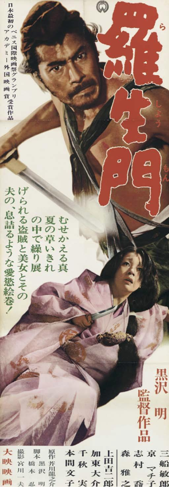
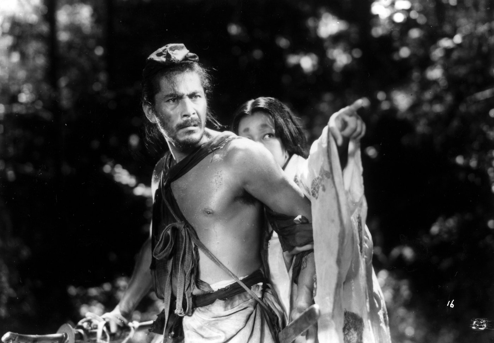
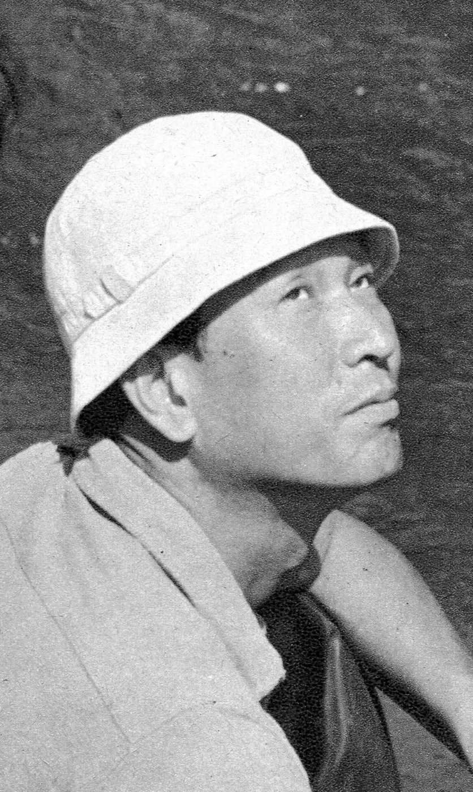
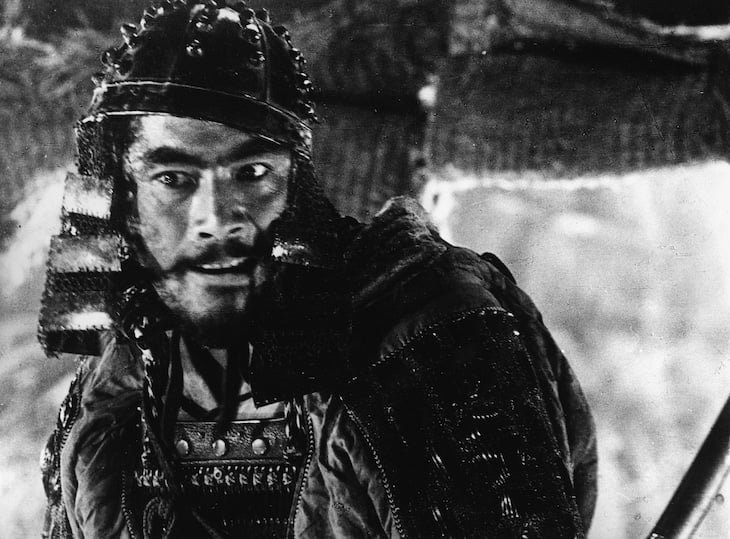
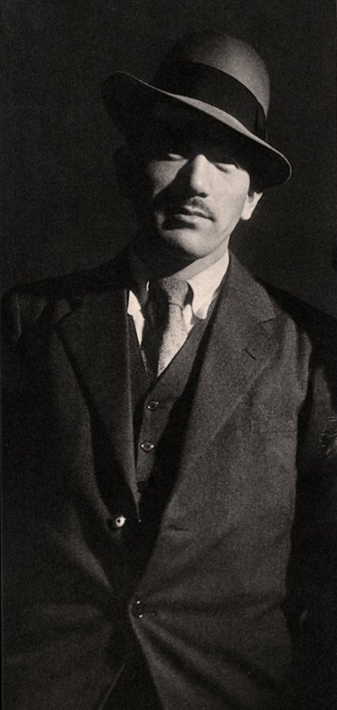
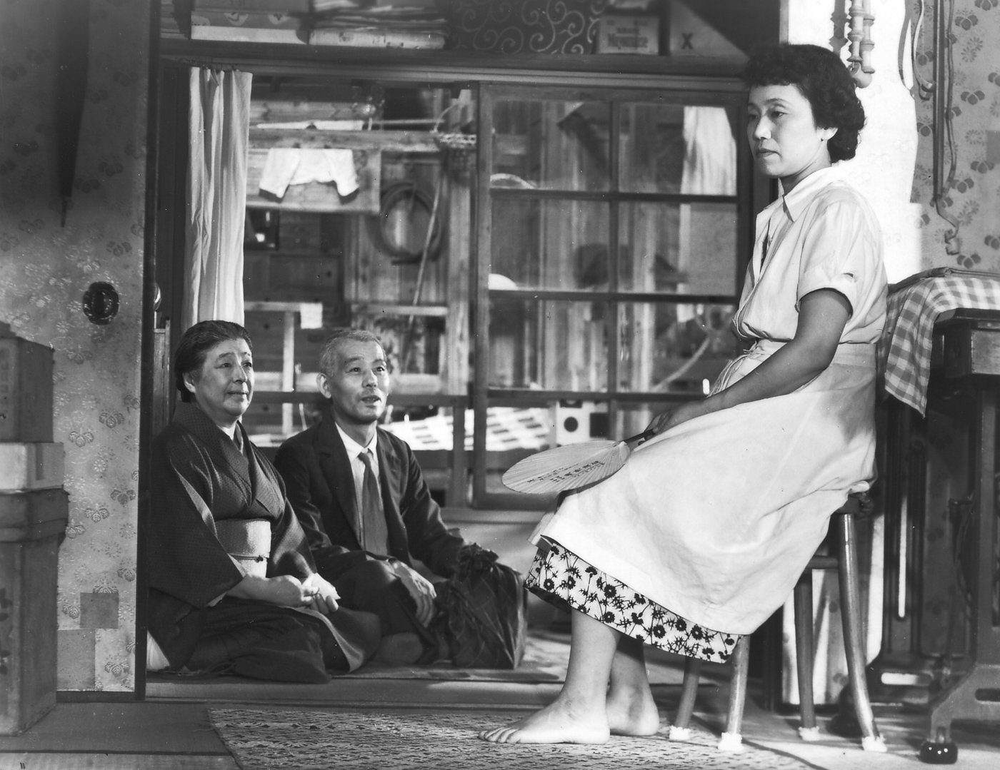
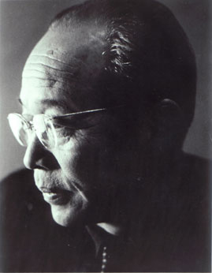
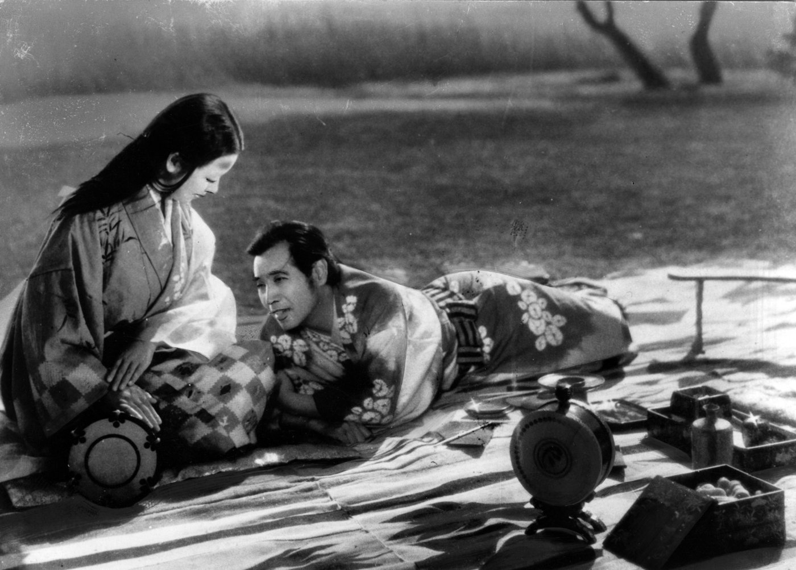
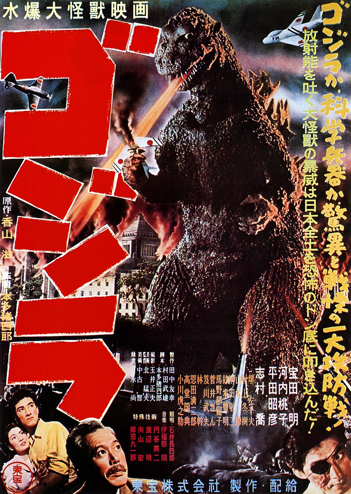

Wednesday · Film
The (c. 1950–1960): , , , and postwar renewal
Between 1950 and 1960, Japanese cinema reached a peak of international recognition and domestic attendance. 's won the Golden Lion at Venice in 1951, opening Western festivals to Japanese film. perfected the family drama with , made women's suffering visible in and , and created the genre with . Studios , , , and thrived on peak attendance, training actors like , , and , and cinematographers like . By 1960, television and the would begin the era's decline.


The is a critical and historical label, not a term the filmmakers used. The period boundaries are approximate: some scholars begin with the end of the in 1952, others with 's Venice premiere in 1951 or earlier postwar films. The end is usually placed around 1960 as television cut attendance and the began, though the major directors continued working for decades. The label emphasizes international recognition (Venice, Cannes, Academy Awards) and domestic commercial success, which peaked in the late 1950s when Japanese cinemas sold more than a billion tickets a year. Not all Japanese films made in this period fit the art-cinema or auteur model; the studios also produced genre films, melodramas, and entertainment pictures that rarely screened abroad. This capsule focuses on the directors and works that defined the era's international reputation and on the studio system that supported them. The posters, stills and portraits here are public-domain files from Wikimedia Commons, each linked to its source page.
Select any words, or tap a dotted term.
- Before 1945 Prewar studio system, benshi narrators, wartime propaganda In the 1920s and 1930s Japanese cinema developed a studio system modeled loosely on Hollywood. Major studios included (founded 1920), (founded 1912, reorganized in the 1920s), (whose parent theater company was founded in 1932), and (founded 1942). Studios produced both (period dramas set in feudal Japan) and (contemporary dramas). Silent films in Japan were accompanied by , live narrators who explained the plot and provided character voices. Japan converted to sound cinema later than Hollywood, with many silent films still produced into the mid-1930s. During the Second Sino-Japanese War (1937–1945) and the Pacific War (1941–1945), the Japanese government controlled film production under the 1939 Film Law, requiring studios to produce propaganda films supporting the war effort. Directors like , , and all worked during the war, making propaganda films or avoiding overtly political subjects.
- 1945–52 US Occupation, SCAP censorship, and the return of jidaigeki After Japan's surrender in August 1945, the Supreme Commander for the Allied Powers () occupied Japan until April 1952. 's Civil Information and Education Section (CIE) censored films, banning themes that glorified feudalism, militarism, or revenge. samurai films were largely prohibited. Studios focused on contemporary dramas addressing postwar poverty, defeat, and social change. made and , crime films set in postwar Tokyo rubble and black markets. returned from war and made , a family drama about a daughter reluctant to marry. made Women of the Night (1948), about prostitution and postwar desperation. After the ended in 1952, returned to production, allowing to make and other period epics.
- 1950–51 Rashomon at Venice: international breakthrough In August 1950 's premiered in Tokyo, produced by . The film is set in Heian-era Kyoto and tells the story of a samurai's murder and his wife's assault, shown from four conflicting perspectives. played the bandit Tajomaru, played the wife, Masayuki Mori the samurai, and a woodcutter. 's cinematography used dappled light through forest canopy and direct sunlight, techniques uncommon in Japanese films. The film did well at home and was 's fourth-highest-grossing film of 1950. In 1951, at the urging of Giuliana Stramigioli, the president of the import company Italifilm, was submitted to the Venice Film Festival. In September 1951 won the Golden Lion, the top prize. Western critics and distributors took notice. In 1952 the Academy of Motion Picture Arts and Sciences awarded an honorary Oscar for Best Foreign Language Film (before a competitive category existed). opened in New York in December 1951 and became an art-house hit. This success opened Western festivals and distributors to Japanese cinema, which had been largely unknown in Europe and America.
- 1952–54 Venice honors Mizoguchi three years running; Godzilla creates the kaiju genre Following 's success, Venice programmed more Japanese films. In 1952 's won the International Prize at Venice. In 1953 's won the Silver Lion at Venice. , set in 16th-century civil war, follows a potter (Masayuki Mori) seduced by a ghost () while his wife () suffers. again provided cinematography, using long takes and crane shots. In 1954 's won the Silver Lion at Venice. Sansho, set in the 11th century, depicts a family torn apart by slavery and feudal cruelty, with as the suffering mother. became known for his focus on women's suffering and his use of long takes and elegant camera movement. Also in 1954, released 's (), produced by Tomoyuki . , a giant radioactive monster awakened by nuclear testing, destroys Tokyo. The film is a direct allegory for the atomic bombings of Hiroshima and Nagasaki and postwar nuclear anxiety. was a massive commercial success in Japan and launched the () genre, spawning dozens of sequels and () films.
- 1954 Seven Samurai: Kurosawa's epic and international genre influence In April 1954 released 's , a three-hour epic. Set in 1586, the film follows seven masterless samurai (ronin) hired by a village to defend against bandits. plays Kikuchiyo, a wild, boastful farmer's son pretending to be a samurai. plays Kambei, the lead samurai. The film took a year to shoot, with elaborate action sequences choreographed by and filmed in dynamic weather (rain, mud, wind). Cinematographer used multiple cameras and telephoto lenses to capture fast action. was the highest-grossing film in Japan in 1954, although its large budget meant it was not very profitable, and it won the Silver Lion at Venice in 1954. It influenced international cinema: John Sturges remade it as The Magnificent Seven (1960), a Hollywood Western. The film established as a master of action, spectacle, and humanist ensemble storytelling.
- 1953–57 Ozu's shomin-geki peak: Tokyo Story and pillow shots , working at Studio, perfected the (films of the common people) in the 1950s. 's films observe middle-class and lower-middle-class families navigating marriage, aging, and separation. He used a low camera position (often called tatami-level, as if the viewer sits on the floor), minimal camera movement, and pillow shots (transition shots of landscapes, objects, or empty rooms). In November 1953 released 's , written by and Kogo Noda. The film follows an elderly couple (Chishū Ryū and Chieko Higashiyama) visiting their adult children in Tokyo. The children are busy and indifferent; only the widowed daughter-in-law () treats them kindly. The parents return home; the mother dies. The film is quiet, elliptical, and devastating in its portrait of generational disconnection. Japanese film exporters at first considered "too Japanese" to sell abroad. It won the Sutherland Trophy in London in 1958 and later came to be seen as one of the greatest films ever made; in 2012 it topped the Sight and Sound poll of film directors. followed with Early Spring (1956) and An Autumn Afternoon (1962), continuing his focus on family dissolution and restraint.
- 1955–58 Diverse voices: Naruse, Ichikawa, Kobayashi, Kinoshita, Kinuyo Tanaka Beyond the big three (, , ), other directors thrived. , at , made melodramas about women's suffering and economic hardship: (1955, starring ) about a postwar affair, and (1960, starring ) about a Tokyo bar hostess. made , a sentimental drama about a schoolteacher and her students before and after the war. made , an anti-war film about a Japanese soldier in Burma who becomes a Buddhist monk, and , a harrowing depiction of starving Japanese soldiers in the Philippines. made (1959–1961), a nine-hour epic critiquing Japanese militarism and labor camps in Manchuria. , a celebrated actress who starred in 's films, became the second Japanese woman to direct a film, after Tazuko Sakane, with Love Letter (1953) and The Moon Has Risen (1955). These films show the breadth of the beyond the canonical auteurs.
- Late 1950s Peak domestic attendance and studio prosperity Domestic attendance peaked in the late 1950s. In 1958 Japanese theaters sold over 1.1 billion tickets in a country of about 90 million people, an average of more than 12 films per person per year. The four major studios (, , , ) plus smaller independents released hundreds of films annually across all genres: , , melodramas, action films, genre pictures. Studios operated vertically integrated systems: production, distribution, and theater ownership. Many stars worked under studio contracts, such as and at and at . Cinematographers like (, freelance), (), and (, 's regular cinematographer) refined visual styles. This prosperity would not last; television adoption accelerated in the late 1950s, and attendance began declining after 1960.
- 1956–60 International festivals continue to honor Japanese films Japanese films continued winning major prizes. In 1955 Hiroshi Inagaki's Samurai I received an honorary Academy Award as the best foreign-language film, and in 1958 his Rickshaw Man won the Golden Lion at Venice. 's was nominated for the Academy Award for Best Foreign Language Film. made , a Macbeth adaptation set in feudal Japan, and The Hidden Fortress (1958), which won him the Silver Bear for Best Director at Berlin in 1959 and later influenced George Lucas's Star Wars (1977). 's won the San Giorgio Prize at Venice in 1960. By 1960 Japanese cinema was no longer exotic; it was recognized as one of the world's leading national cinemas alongside Italian, French, and American film. Western critics and filmmakers studied 's action, 's restraint, and 's long takes as models of cinematic grammar.
- After 1960 Television, declining attendance, and the Japanese New Wave reaction After 1960, television rapidly replaced theatrical film as Japan's dominant entertainment medium. Cinema attendance declined throughout the 1960s. Studios cut production, laid off staff, and released contract actors. In response, a younger generation of directors emerged, later called the : (Cruel Story of Youth, 1960), (Pigs and Battleships, 1961), Yoshishige Yoshida (Good for Nothing, 1960), and Masahiro Shinoda (Pale Flower, 1964). These directors reacted against the humanism and restraint of , , and , making confrontational, sexually explicit, politically radical films. The directors continued working: made and High and Low (1963); made An Autumn Afternoon (1962), his last film, before his death in 1963; and continued into the 1970s and beyond. But the studio system that supported the had fractured, and Japanese cinema entered a new, more fragmented era.
Before
The prewar studio system, benshi narrators, wartime propaganda, and US Occupation censorship
Before the , Japanese cinema was shaped by a studio system modeled loosely on Hollywood's vertical integration and by cultural practices distinct from the West. In the 1920s and 1930s, four major studios emerged: (founded 1920), (founded 1912, reorganized in the 1920s), (whose parent theater company was founded in 1932), and (founded 1942). These studios produced both (period dramas set in feudal Japan with samurai, merchants, and feudal intrigue) and (contemporary dramas set in modern times). Silent films in Japan were accompanied by , live narrators who stood beside the screen and explained the plot, provided character dialogue, and added commentary. were celebrities; audiences came to hear favorite narrators as much as to see the film. Japan converted to sound cinema later than Hollywood, with many silent films still produced into the mid-1930s. When talkies arrived, the profession declined, though some narrators transitioned to voice acting or radio.
During the Second Sino-Japanese War (1937–1945) and the Pacific War (1941–1945), the Japanese government controlled film production under the 1939 Film Law. Studios were required to produce propaganda films supporting the war effort, depicting Japanese soldiers as heroic, the enemy as barbaric, and the home front as united. Directors like , , and all worked during the war. made The Most Beautiful (1944), a propaganda film about women working in a lens factory. made patriotic dramas. , conscripted into the army, served in China and later Singapore, and after the war rarely spoke of his wartime experiences. The war ended in August 1945 with Japan's surrender. American forces occupied Japan, and the Supreme Commander for the Allied Powers () governed until April 1952.
's Civil Information and Education Section (CIE) censored Japanese films, banning themes that glorified feudalism, militarism, revenge, or loyalty to feudal lords. samurai films were prohibited because they were seen as promoting feudal values incompatible with democratic reform. Studios shifted to contemporary dramas addressing postwar poverty, defeat, black markets, and social change. made , a crime film about a doctor treating a tubercular yakuza in the ruins of Tokyo, and , about a detective hunting his stolen gun through sweltering streets, rubble, and desperation. made , a quiet about a daughter reluctant to leave her widowed father to marry. made Women of the Night (1948), depicting prostitution and women's suffering in postwar chaos. After the ended in April 1952, returned to production, and the studios could again make the samurai epics that had defined prewar cinema.
The hinge
1950–1951: Rashomon wins Venice and an honorary Oscar, opening the West to Japanese film
In August 1950 released 's , a set in Heian-era Kyoto during a period of social collapse. The film opens with three men sheltering from rain at the ruined gate, recounting a recent trial. A samurai was murdered in a forest; his wife was assaulted; a bandit was captured. At the trial, the bandit, the wife, the dead samurai (speaking through a medium), and a woodcutter who witnessed the crime all tell conflicting versions of what happened. Each account is self-serving, unreliable, and contradictory. The film offers no resolution, no objective truth, only competing perspectives and the erosion of certainty. played the bandit Tajomaru with wild physical intensity, laughing and leaping. played the wife with beauty and ambiguity. Masayuki Mori played the samurai; the woodcutter. Cinematographer shot the forest scenes with dappled light filtering through canopy, a technique uncommon in Japanese films, which usually avoided direct sunlight. also pointed the camera directly at the sun, which was considered taboo at the time, and used mirrors to reflect sunlight onto the actors' faces.

_Press_Photo_of_Toshiro_Mifune_and_Machiko_Ky%C5%8D.jpg){kind=link}
premiered at the Imperial Theatre in Tokyo on 25 August 1950 and did well with audiences; several cinemas kept it for two or three weeks instead of the usual one, and it became 's fourth-highest-grossing film of the year. Japanese critics praised the direction and the photography but complained about how the film adapted Akutagawa's stories and about its complexity. 's president, Masaichi Nagata, did not like it. Japanese studios at the time had little interest in foreign festivals, and paying for prints and subtitles looked like a waste of money. The film reached Venice because Giuliana Stramigioli, the president of the import company Italifilm, recommended it to the Italian agency that was looking for a Japanese film for the 1951 festival. In September 1951 won the Golden Lion, the top prize at Venice, along with the Italian Critics Award. Western critics praised its structure and its images, and distributors took notice. opened in New York in December 1951 and became an art-house hit. In 1952 the Academy of Motion Picture Arts and Sciences gave it an honorary award as the best foreign-language film released in the United States, before a competitive category existed.
's success changed how Western festivals, distributors, and critics saw Japanese cinema, which had been largely unknown in Europe and America. Venice, Cannes, and Berlin began programming Japanese films. Distributors sought Japanese titles for art-house release. Film scholars and critics wrote about , , as auteurs comparable to Italian, French, and American masters. For Japanese studios, proved that art-cinema prestige could be profitable and that international festivals were worth pursuing. , , , and began submitting films to Venice, Cannes, and Berlin. The 's international dimension — the recognition of Japanese cinema as one of the world's leading national cinemas — began with 's unexpected Venice triumph in 1951.
The field
Kurosawa, Ozu, Mizoguchi: three masters with distinct styles and visions of postwar Japan
The is often told as the story of three directors: , , and . This is a simplification — the era included , , , , , and others — but the three are useful lenses for understanding the breadth of approaches and concerns. made action films, humanist dramas, and adaptations of Shakespeare and Dostoevsky. made quiet family dramas about generational disconnection and the dissolution of traditional bonds. made long-take period films about women's suffering under feudalism and patriarchy. All three were shaped by the war and postwar reconstruction, but they responded in different ways.
(1910–1998) trained as a painter before entering film in the 1930s as an assistant director. His early postwar films — , — were crime films set in ruined Tokyo, influenced by American crime films. After the ended in 1952, returned to and made his international reputation with period epics. is a three-hour action film about seven masterless samurai (ronin) defending a village from bandits. shot in rain, mud, and wind, using dynamic weather to heighten emotion and movement. Cinematographer used multiple cameras and telephoto lenses to capture fast action from multiple angles, so that actors and editors had several views of each action. played Kikuchiyo, a wild farmer's son pretending to be a samurai; played Kambei, the stoic leader. The film is about class, honor, and survival, and it treats the samurai not as noble heroes but as professionals doing a job. influenced global cinema: John Sturges remade it as The Magnificent Seven (1960), a Hollywood Western. followed with , a Macbeth adaptation set in feudal Japan with Noh theater influences, and The Hidden Fortress (1958), an adventure film that George Lucas later drew on for Star Wars (1977).



.jpg){kind=link}
(1903–1963) spent most of his career at Studio, making dramas about middle-class and working-class families. used a low camera position, often at tatami-mat level as if the viewer were sitting on the floor in a Japanese home. His camera rarely moved; instead he composed static, symmetrical frames and used pillow shots — transition shots of empty rooms, landscapes, laundry hanging, or a teapot — to create contemplative pauses. 's films are elliptical: major events happen offscreen, and emotion is conveyed through small gestures, silences, and restraint. , written by and screenwriter Kogo Noda, follows an elderly couple (Chishū Ryū and Chieko Higashiyama) who travel from a provincial town to Tokyo to visit their adult children. The children are busy, distracted, and indifferent; they have no time for their parents. Only the widowed daughter-in-law (), who lost her husband in the war, treats them kindly. The parents return home; the mother dies. The film is quiet, devastating, and precise in its portrait of generational disconnection and the erosion of traditional family structures in postwar modernity. Japanese exporters at first thought was "too Japanese" for foreign audiences, but it later became recognized internationally as one of the greatest films ever made, topping the Sight and Sound directors' poll in 2012.




(1898–1956) made films about women's suffering, often set in feudal Japan. used long takes and elegant, flowing camera movement, including crane shots that followed characters through multiple rooms or across landscapes without cutting. His films depicted women trapped by poverty, patriarchy, prostitution, and feudalism, with a tone of compassion and anger. follows a courtesan () who falls from nobility to prostitution over a lifetime, set in 17th-century Japan. is a ghost story set during 16th-century civil war: a potter (Masayuki Mori) abandons his wife () to seek profit and is seduced by a ghost () who lives in a ruined mansion. The film is dreamlike, tragic, and morally clear: the potter's greed and vanity destroy his family. depicts an 11th-century family torn apart when the father is exiled and the mother and children are sold into slavery. The mother () is separated from her children for many years; the film ends with her son, now a governor, finding her old and blind on a remote island. 's films won repeated prizes at Venice in the early 1950s, establishing his international reputation. He died of leukemia in 1956 at age 58, ending his career at its peak.




A story
Godzilla (1954): kaiju as atomic bomb allegory and the birth of tokusatsu spectacle
On November 3, 1954, released (later released internationally as ), directed by and produced by Tomoyuki . The film opens with a Japanese fishing boat destroyed by a mysterious flash of light. More ships vanish. Odo Island residents report a giant creature. Scientists investigate and discover , a prehistoric reptile awakened and mutated by nuclear testing in the Pacific. is radioactive; its footprints are contaminated. The creature comes ashore and destroys Tokyo in scenes of fire, collapsed buildings, and fleeing crowds. Civilians are shown in hospitals suffering radiation sickness. The military's weapons are useless. A scientist, Dr. Serizawa (Akihiko Hirata), has invented an Oxygen Destroyer, a weapon that could kill but also poses catastrophic risks if used as a weapon of war. Serizawa reluctantly uses it, killing and himself.
was a direct allegory for the atomic bombings of Hiroshima and Nagasaki in August 1945 and the ongoing trauma of nuclear weapons. Japan was the only nation to suffer atomic attack, and postwar Japan was haunted by radiation, disfigurement, and death. In 1954, just nine years after Hiroshima, the Japanese fishing boat Daigo Fukuryū Maru (Lucky Dragon No. 5) was contaminated by fallout from a US hydrogen bomb test at Bikini Atoll; one crew member died. The incident inflamed anti-nuclear sentiment in Japan and directly inspired 's premise. and screenwriter Takeo Murata did not hide the allegory. 's radioactive breath, the contaminated ruins, the hospital scenes — all evoked Hiroshima and Nagasaki. The film is somber, even tragic; is not a villain but a victim and a warning.
director created using techniques: an actor (Haruo Nakajima) wore a heavy rubber monster suit (suitmation), and Tokyo was represented by detailed miniature buildings and sets. The production destroyed hundreds of miniature structures to film 's rampage. used slow-motion photography to make the monster's movements appear massive and weighty. Composer Akira Ifukube provided the score, including 's iconic roar. set an opening-day record for in Tokyo and sold about 9.7 million tickets, making it the eighth best-attended film in Japan that year. produced dozens of sequels over the following decades, and became a global pop-culture icon. Later films turned into a heroic defender of Japan, but the 1954 original is a horror film and a memorial, one of the 's most politically direct statements about the atomic bomb and postwar anxiety.
Elsewhere at the same time
Italian neorealism, Satyajit Ray's India, and Hollywood's widescreen decline: parallel postwar cinemas
Look sideways at the 1950s and see other national cinemas navigating postwar reconstruction and changing audiences. In Italy, the neorealist movement that began with Roberto Rossellini's Rome Open City (1945) had largely ended by the early 1950s, giving way to melodramas, comedies, and the international success of Federico Fellini's La Strada (1954) and Nights of Cabiria (1957). , a related capsule on this site, and the were contemporaneous responses to postwar rupture, but used location shooting and non-professional actors while Japanese studios maintained a star system and studio control. Both movements addressed defeat, poverty, and social change, but 's emphasis on the everyday and the working class differed from the 's focus on both art-cinema auteurs and genre spectacle.
In India, the 1950s saw the rise of a parallel . Satyajit Ray's Pather Panchali (1955), the first of the Apu Trilogy, won a special prize at Cannes in 1956, bringing Bengali art cinema to Western festivals a few years after had done the same for Japan. Ray, influenced by and Jean Renoir, made intimate, humanist films about Bengali life. Raj Kapoor and Guru Dutt became major stars and directors, making melodramas that addressed postwar India, Partition trauma, and modernity. Indian cinema's overlapped with Japan's, but it grew out of a newly independent country with many regional languages, and most of its popular films were made for audiences at home rather than for festivals.
In Hollywood, the 1950s were a period of decline and defensive innovation. Television cut theater attendance; studios responded with widescreen formats (CinemaScope, VistaVision), color, and spectacle. Biblical epics like The Ten Commandments (1956) and Ben-Hur (1959) aimed to offer what television could not: scale and grandeur. The studio system that had dominated Hollywood since the 1920s fractured under antitrust rulings, television competition, and changing tastes. American film noir, a related capsule on this site, ended around 1958; Orson Welles's Touch of Evil (1958) is often cited as the last classic noir. Meanwhile, Japanese studios thrived on domestic audiences while also exporting to international festivals and art houses. In the late 1950s, while Hollywood was searching for new formulas, the Japanese industry was at the height of its domestic attendance and international prestige.
After
Television, declining attendance, and the Japanese New Wave's confrontational break
By 1960 the 's commercial and cultural dominance was ending. Television adoption accelerated in Japan in the late 1950s and early 1960s. In 1953 NHK (Nippon Hoso Kyokai, Japan Broadcasting Corporation) began television broadcasts; by 1960 television sets were common in urban homes, and by the mid-1960s television was ubiquitous. Cinema attendance, which had peaked in 1958 at over 1.1 billion tickets, began declining. Studios cut production, laid off staff, and released contract actors. The vertically integrated studio system that had supported the could not sustain itself without high attendance. , , , and reduced output and shifted toward cheaper genre films and exploitation pictures. By the late 1960s was in financial crisis and would go bankrupt in 1971.
A younger generation of directors emerged in the late 1950s and early 1960s, later called the . Directors including (Cruel Story of Youth, 1960), (Pigs and Battleships, 1961), Yoshishige Yoshida (Good for Nothing, 1960), and Masahiro Shinoda (Pale Flower, 1964) reacted against the humanism, restraint, and classical style of , , and . The New Wave made confrontational, sexually explicit, politically radical films addressing class, imperialism, and sexual liberation. 's films critiqued postwar conservatism and American military presence. 's films focused on Japan's lower classes, criminals, and taboo subjects. These directors saw the golden-age masters as too polite, too humanist, too complicit with traditional values. The New Wave was a generational break, a rejection of the fathers.
The golden-age directors continued working into the 1960s, 1970s, and beyond, but their cultural dominance had passed. made , a dark samurai comedy starring as a ronin playing two gangs against each other, and High and Low (1963), a kidnapping thriller. Both were commercial successes, but later struggled to finance projects at home and turned to international co-productions such as Dersu Uzala (1975). made An Autumn Afternoon (1962), his final film, before dying of cancer in 1963 on his 60th birthday. had died in 1956. , , , and continued making films, but the era of studio-backed auteur cinema at peak commercial attendance was over. The became a retrospective label, a moment remembered, studied, and canonized but no longer lived.
A question
A question to keep asking
If the was defined by international festival recognition and domestic commercial peak, what happens to a national cinema when international prestige and domestic audiences diverge? Can a be sustained when art cinema wins prizes abroad while domestic viewers prefer television and genre films, or does the label itself become a way of freezing a cinema in the past, making it harder for later filmmakers to escape the shadow of , , and ?
Fun fact
The studio boss who didn't get Rashomon later kept its Golden Lion in his office


After the first company preview of at 's headquarters, the room was silent for a few minutes until the studio president, Masaichi Nagata, said, "I don't really get it, but it's a noble photograph." According to , Nagata called the film incomprehensible and disliked it so much that he demoted its producer. Once the film won at Venice, Nagata changed his tune. He kept the original Golden Lion in his office, handed out replicas to the people who had made the film, and spoke about its success as if it were his own. said that watching Nagata take credit on television made him feel he was back inside , a film about people telling flattering versions of the truth about themselves.